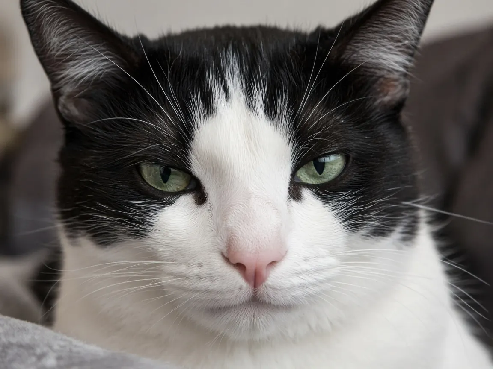

Why do cats meow at humans?
Adult pet cats meow mainly at people. Among adult cats the meow is uncommon in cat to cat talk and common when a cat wants a person's attention, food, a door opened or company. Domestication and life with humans shaped how those calls sound and when cats use them. Meows are not a private language with fixed word meanings; they are flexible attention getters that owners learn to read in context.

Meows are for people more than for other cats
Reviews of feline vocal communication note that the meow is rare in adult cat to cat interactions but is one of the most common calls in cat to human encounters. Adult house cats appear to have specialized the meow for people rather than for other cats. That pattern fits everyday life: two adult cats that share a home often rely more on scent, body language and quiet contact sounds, while the loud "talk to me" meow is aimed at the human who controls food, doors and play.
Kittens still meow (and cry) to their mothers. Adult meowing at humans builds on that kitten toolkit and on learning what works with a particular person. Cats also use other sounds with people, including the food solicitation purr described by McComb and colleagues (see why do cats purr?), but the open mouthed meow is the classic attention call.
Domestic meows sound different from wildcat cries (Nicastro, 2004)
Nicholas Nicastro compared meows from domestic cats (Felis catus) with cries from African wild cats (Felis silvestris lybica), the closest wild relatives of house cats. Both acoustic measures and human listening tests showed clear species level differences:
- Shorter calls. Domestic meows were significantly shorter in mean duration than wild cat meows.
- Higher pitch measures. Domestic meows showed higher mean formant frequencies and higher mean fundamental frequencies.
- More pleasant to human ears. Listeners across levels of cat experience rated domestic meows as far more pleasant sounding than wild cat vocalizations.
Nicastro argues that these results fit a domestication model in which human perceptual preferences put selective pressure on meows. Cats whose calls sounded more appealing (or more effective) at recruiting care would have had an advantage around people. That does not mean every meow was "designed" on purpose; it means the calls that work better with human ears and habits tend to stick.
Can people decode what a meow "means"? (Nicastro and Owren, 2003)
In a related study, Nicastro and Michael Owren asked naive and experienced listeners to classify meows recorded from 12 cats in five behavioral contexts. Accuracy was significantly above chance, but only modestly so. Hearing bouts of calls helped more than hearing single calls. People who had lived with cats and liked them did better at reading individual calls.
The authors find little evidence that meows are cleanly referential (like words that map to fixed objects or requests). Instead, meows act as nonspecific, somewhat negatively toned stimuli that pull human attention. With experience, people get better at inferring positive affect from their own cat's meows. In plain terms: your cat is not speaking English, but a familiar owner often knows whether a given meow usually means "feed me," "open the door" or "I want company."
House cats and feral cats meow differently (Yeon et al., 2011)
Seong C. Yeon and colleagues compared vocalizations from feral cats (n = 25) and house cats (n = 13) across five social test situations (familiar caretaker, threatening stranger, large doll, stranger with a dog, stranger with a cat). Feral cats showed more aggressive and defensive behavior and higher overall call rates, consistent with less socialization and greater fear.
Acoustic details mattered by call type. In growls and hisses during agonistic tests, feral cats tended toward higher frequency measures. For meows, the reverse pattern held: house cats' meows had significantly higher fundamental frequency, first formant, peak frequency and related measures than feral cats' meows, and house cats' calls in those tests were significantly shorter. The authors conclude that socialization shapes both which vocal types cats use and how those calls sound, and that proper early socialization helps a cat become a suitable companion.
A 2020 open access review by Tavernier, Ahmed, Houpt and Yeon summarizes the same theme: pet cats can build efficient communication with humans through flexible vocal behavior, and the meow is a standout example of a call used to attract human attention.
What that means at home
- Meowing at you is normal companion behavior. It is how many cats ask for attention from the species that feeds and houses them.
- Context beats "translation apps." Time of day, body language and what just happened matter more than treating each meow as a fixed word.
- Sudden loud or constant meowing needs a check. Rule out medical causes (pain, hyperthyroidism, cognitive change in seniors, sensory loss) with a vet if the pattern is new, intense or paired with other illness signs.
- Answer the need, not only the noise. Scheduled play, food puzzles and predictable routines often cut demand meowing more than yelling "quiet."
Every paper cited here is listed with its DOI on our cat research page. Related reading: do cats know their names? and cat behavior and body language.
Cat meowing FAQ
Why do cats meow at humans?
Adult cats mainly use meows as attention getters toward people. Domestication and cohabitation shaped calls that sound shorter and higher pitched than wildcat cries and that recruit human care.
Do adult cats meow much at other cats?
Usually no. Reviews describe the adult meow as rare in cat to cat talk and common in cat to human talk, while scent and body language carry more of the cat to cat load.
Can people tell what a meow means?
Only modestly from the sound alone. Nicastro and Owren (2003) found classification above chance but far from perfect; owners who know a cat's habits do better than strangers.
Why does my cat meow so much?
Hunger, boredom, door requests, greeting and learned reinforcement are common. A sudden change in volume or frequency deserves a vet visit to rule out illness.
Sources
- Nicastro N. (2004) Perceptual and acoustic evidence for species-level differences in meow vocalizations by domestic cats (Felis catus) and African wild cats (Felis silvestris lybica). Journal of Comparative Psychology 118(3):287 to 296. doi:10.1037/0735-7036.118.3.287
- Nicastro N., Owren M.J. (2003) Classification of domestic cat (Felis catus) vocalizations by naive and experienced human listeners. Journal of Comparative Psychology 117(1):44 to 52. doi:10.1037/0735-7036.117.1.44
- Yeon S.C., Kim Y.K., Park S.J., Lee S.S., Lee S.Y., Suh E.H., Houpt K.A., Chang H.H., Lee H.C., Yang B.G., Lee H.J. (2011) Differences between vocalization evoked by social stimuli in feral cats and house cats. Behavioural Processes 87(2):183 to 189. doi:10.1016/j.beproc.2011.03.003
- Tavernier C., Ahmed S., Houpt K.A., Yeon S.C. (2020) Feline vocal communication. Journal of Veterinary Science 21(1):e18. doi:10.4142/jvs.2020.21.e18
Cite this page
Students and teachers are welcome to cite this page. Add your access date if your teacher or style guide asks for one.
APA (7th ed.)
MeowWise. (2026, October 16). Why do cats meow at humans? https://meowwise.com/blog/why-do-cats-meow-at-humans.html
MLA (9th ed.)
“Why do cats meow at humans?” MeowWise, Joshua Israel Ventures LLC, 16 Oct. 2026, meowwise.com/blog/why-do-cats-meow-at-humans.html.
Chicago (bibliography)
MeowWise. “Why do cats meow at humans?” Joshua Israel Ventures LLC. Last modified October 16, 2026. https://meowwise.com/blog/why-do-cats-meow-at-humans.html.
General education, not veterinary advice. If you are worried about your cat, contact your veterinarian; in an emergency, go to the nearest emergency vet.